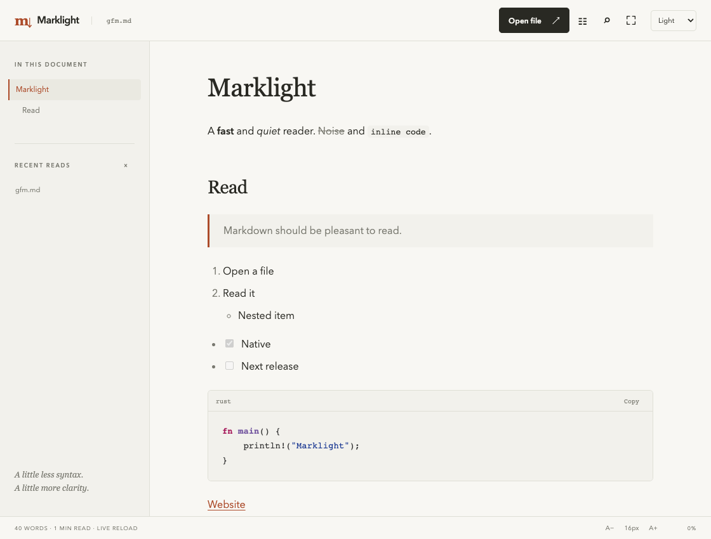

Find your place.
A heading outline and in-document search help you move through longer reads. Reading progress keeps your bearings.
A dedicated Markdown reader
Read the README. Follow the guide. Get lost in the words.
Marklight gives your Markdown a quiet place to live, in your terminal or on your desktop.
Your files.
Your machine.
Your reading space.
Written in Rust.
Open source. MIT licensed.
01 / On your desktop

A heading outline and in-document search help you move through longer reads. Reading progress keeps your bearings.
Choose light, dark or system theme. Adjust the type size, hide the outline, or enter zen mode for just the page.
Tables, task lists and highlighted code belong in the document. Copy code from its original source, including line endings.
02 / In your terminal
Read a file where you already work. Open a directory’s README, pipe Markdown from another command, or set the width for your terminal.
Long reads use your pager. With less, press / to search, n for the next match and q to leave.
Marklight
━━━━━━━━━
A fast and quiet reader. Noise and inline code.
Read
│ Markdown should be pleasant to read.
1. Open a file
2. Read it
• Nested item
☑ Native
☐ Next release
╭─ rust
│ fn main() {
│ println!("Marklight");
│ }
╰─View the complete example output 03 / A smaller reading ritual
Open the files already on your machine. Preferences and recent paths stay in a local configuration file. No account, server or telemetry.
Save changes in your editor and the desktop reader reloads the file, preserving your reading context. Follow relative Markdown links to the next document.
Local raster images load from the document’s own directory tree. Remote images stay unloaded, so opening a document doesn’t contact an image tracker.
04 / Start reading
Install the terminal reader on macOS Apple Silicon,
or build from the Rust source repository.
Markdown should be
pleasant to read.